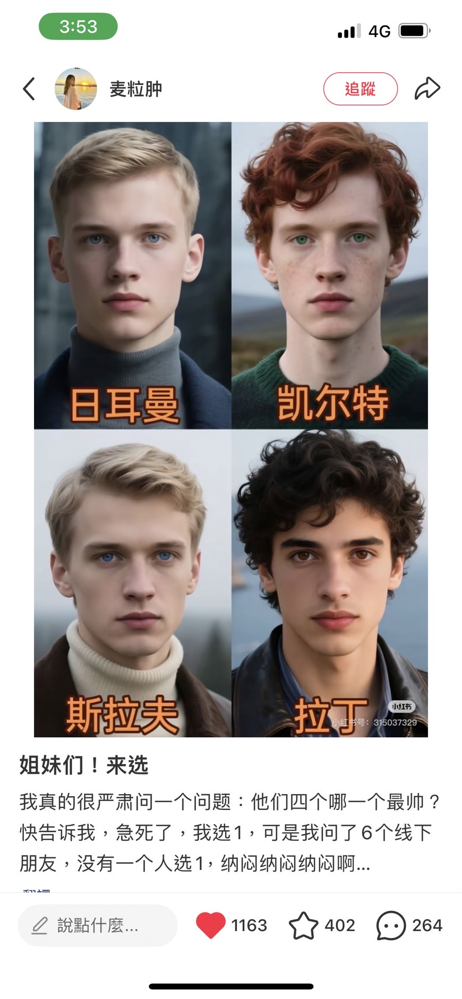

點擊上方的語言選單以切換語言
本文旨在整理和分析奇幻作品中常見的歐洲文化分類系統，特別是基於髮色、眼色與文化風格的視覺與敘事模板。
這些分類在奇幻世界觀建構中具有重要作用，幫助創作者快速傳達角色背景與文化特徵。
在許多奇幻作品、遊戲與小說中，歐洲常被拆分為數個文化與語言群組。
這些分類並非現實生物學上的人種劃分，而是由歷史語言、文化演化與地理環境所形成的敘事模板。
在視覺設計上，這些文化模板常被進一步簡化為：
現實世界中的歐洲由多個語言與歷史文化群組構成，這些群組也直接影響奇幻作品的世界觀設計。

歐洲在外觀特徵上呈現較明顯的顏色變化，主要來自遺傳與環境共同作用，而非單純“種類較多”。
髮色與眼色主要由少數與黑色素相關的基因控制，因此變化本質是黑色素濃度差異。
在高緯度地區紫外線較弱，較淺色特徵在維生素D吸收方面具有適應性優勢。
冰河時期後歐洲人口經歷瓶頸與重新擴張，使部分基因（如金髮、藍眼）在區域內集中。
歐洲存在明顯南北差異：北部偏淺色、南部偏深色、中部混合，形成完整顏色光譜。
象徵直接、力量與戰鬥文化，常作為北方王國或軍事文明模板。
象徵自然力量與古老文明殘存，常作為邊境或神秘地帶。
常用於塑造邊境文明、古老傳說世界與帶有神秘感的民俗文化。
象徵文明核心與制度化社會，例如帝國首都或宗教中心。
| 北方戰士文明 | 金 / 淺棕 | 藍 / 灰 | 力量、戰鬥、榮耀 |
| 森林自然文明 | 紅 / 棕紅 | 綠 / 灰 | 自然、古老信仰、神秘 |
| 東歐民俗文明 | 棕 / 深棕 / 灰金 | 灰 / 淡藍 / 淺色混合 | 邊境、宿命、民俗傳說、古老宗教 |
| 南歐帝國文明 | 黑 / 深棕 | 深棕 / 黑 | 秩序、帝國、教會、文明中心 |
歐洲文化在奇幻作品中常被轉化為視覺與敘事模板，其髮色與眼色差異主要源自遺傳與地理環境影響，而非族群等級或分類差異。
這些分類在現代創作中逐漸混合，但仍是建立世界觀時最常見的設計語言之一。